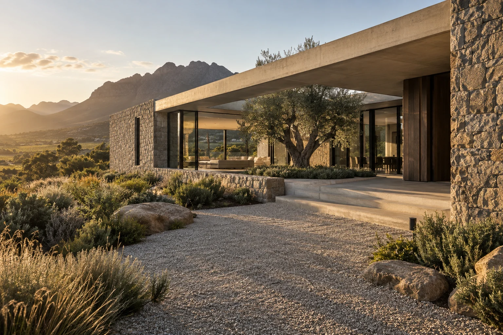

Architecture in the making
Built to
belong.
Considered homes. Honest materials. Spaces shaped around the way you live.
Tell us about your project
Our point of view
A home should feel right.
Long before the final detail.
Good building begins with listening. We bring the same care to the first conversation, the site and every finishing touch.
SELECTED DESIGN STUDY / CONCEPT IMAGERY
The Courtyard House
Quiet confidence.
Open to the landscape.
Natural stone, deep shade and generous openings. A residential concept that puts light, privacy and everyday life in balance.
- Direction
- Contemporary residential
- Materials
- Stone · timber · glass
- Approach
- Indoor / outdoor living
What we do
From an idea
to a place to call home.
New homes +
From early planning to the final handover, a coordinated build shaped around your site, your priorities and your vision.
Renovations +
Reimagine the spaces you already know. Thoughtful alterations, considered extensions and material choices that bring a home together.
Interior completion +
Joinery, finishes and the details you touch every day, coordinated as part of a complete project.
Let’s begin
Your plans.
Our first conversation.
Share where you are in the process. A short brief helps establish the right next step.